Thinking of complete functions as individual data points, which is the basic conceptual framework for FDA, suggests the need to include these observations in standard analyses. Regression models with scalar outcomes avoid reducing functional predictors to single-number summaries or treating each observed grid point separately. Instead, this class of approaches generally seeks to smooth estimate coefficient functions that flexibly capture the time-dependent structure in the associations.
The goal of this Chapter is to introduce FDA methods for modeling the effect of functional predictors on scalar outcomes. We start with a direct but non-functional approach which serves to build intuition for later functional methods. This approach, where bin-level averages are used as predictors in standard regression models, is useful in itself as an exploratory and interpretable analysis.
# import and organize the data
nhanes_df =
readRDS(
here::here("data", "nhanes_fda_with_r.rds")) %>%
mutate(
death_2yr = ifelse(event == 1 & time <= 24, 1, 0)) %>%
select(
SEQN, BMI, age, gender, death_2yr,
MIMS_mat = MIMS, MIMS_sd_mat = MIMS_sd) %>%
filter(age >= 25) %>%
drop_na(BMI) %>%
tibble()nhanes_df =
nhanes_df %>%
mutate(
MIMS_tf = matrix(MIMS_mat, ncol = 1440),
MIMS_tf = tfd(MIMS_tf, arg = seq(1/60, 24, length = 1440)),
MIMS_sd_tf = matrix(MIMS_sd_mat, ncol = 1440),
MIMS_sd_tf = tfd(MIMS_sd_tf, arg = seq(1/60, 24, length = 1440)))Doing 12 2-hour bins.
nhanes_bin_df =
nhanes_df %>%
mutate(
MIMS_binned =
tf_smooth(MIMS_tf, method = "rollmean", k = 120, align = "center"),
MIMS_binned = tfd(MIMS_binned, arg = seq(1, 23, by = 2))) %>%
select(BMI, MIMS_binned)
## setting fill = 'extend' for start/end values.
## Warning: There was 1 warning in `mutate()`.
## ℹ In argument: `MIMS_binned = tf_smooth(MIMS_tf, method = "rollmean", k = 120,
## align = "center")`.
## Caused by warning in `tf_smooth.tfd()`:
## ! non-equidistant arg-values in 'MIMS_tf' ignored by rollmean.
fit_binned =
lm(BMI ~ .,
data = nhanes_bin_df %>% tf_spread(MIMS_binned))nhanes_bin_df %>%
slice(1:500) %>%
ggplot(aes(y = MIMS_binned, color = BMI)) +
geom_spaghetti() +
geom_meatballs()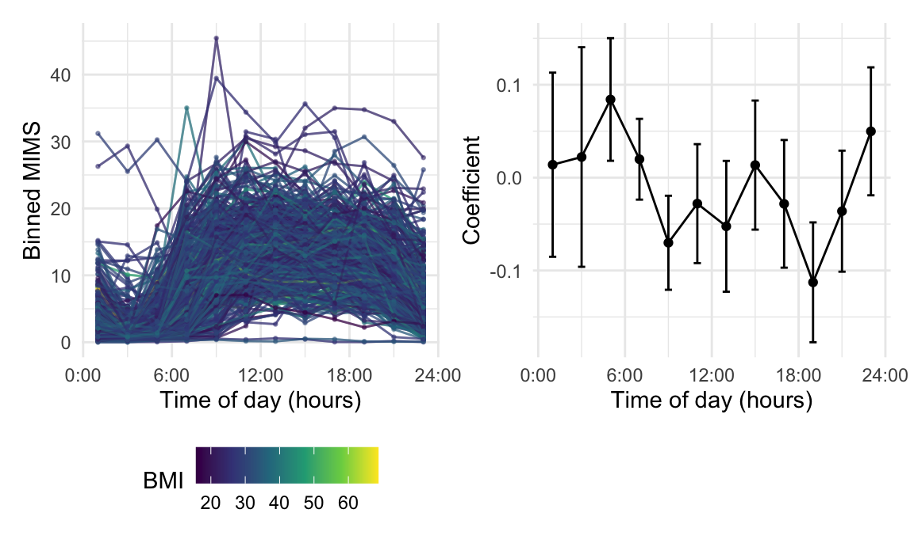
fit_binned %>%
broom::tidy() %>%
filter(term != "(Intercept)") %>%
mutate(
hour = str_replace(term, "MIMS_binned_", ""),
hour = as.numeric(hour),
ub = estimate + 1.96 * std.error,
lb = estimate - 1.96 * std.error) %>%
ggplot(aes(x = hour, y = estimate)) +
geom_point() + geom_path() +
geom_errorbar(aes(ymin = lb, ymax = ub), width = .5)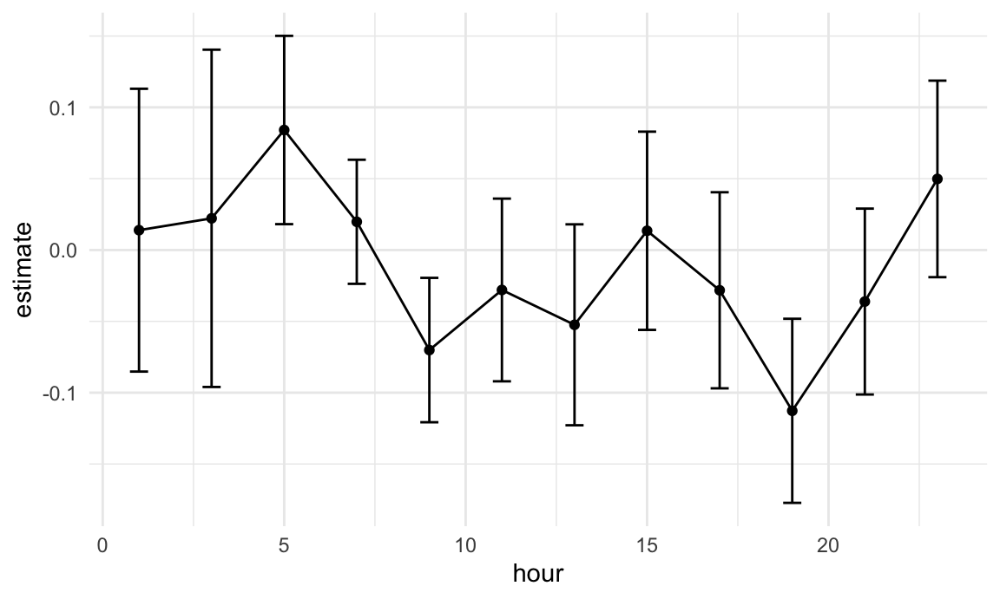
Not shown: code plotting and saving results
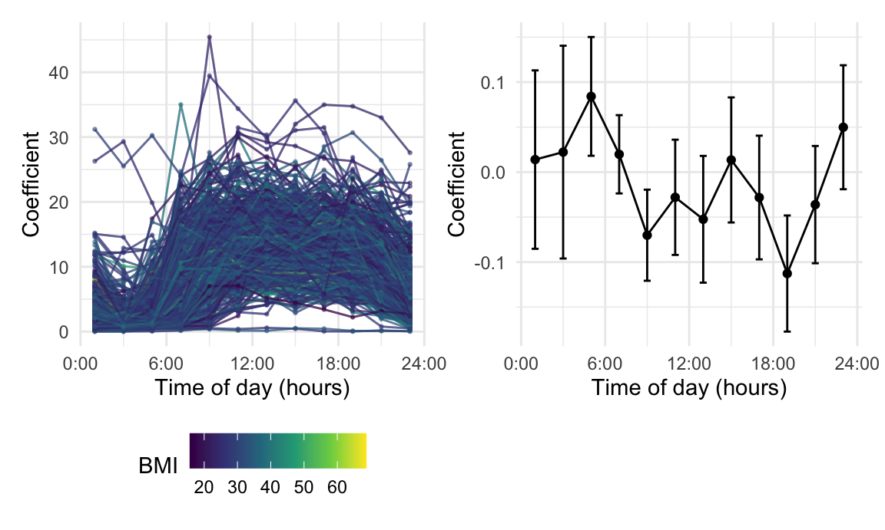
Binned vs daily average, comparing adjusted R squared
nhanes_df %>%
mutate(mean_mims = tf_integrate(MIMS_tf)) %>%
lm(BMI ~ mean_mims, data = .) %>%
broom::glance() %>%
select(adj.r.squared)
## # A tibble: 1 × 1
## adj.r.squared
## <dbl>
## 1 0.0167
fit_binned %>%
broom::glance() %>%
select(adj.r.squared)
## # A tibble: 1 × 1
## adj.r.squared
## <dbl>
## 1 0.0267Showing the binned regression as a step function – begin to shift towards coefficient function interpretation
stepfun_coef_df =
fit_binned %>%
broom::tidy() %>%
filter(term != "(Intercept)") %>%
select(estimate, std.error) %>%
slice(rep(1:12, each = 120)) %>%
mutate(
method = "Step",
estimate = .5 * estimate,
arg = seq(1/60, 24, length = 1440)) %>%
tf_nest(.id = method)Not shown: code for plots similar to above
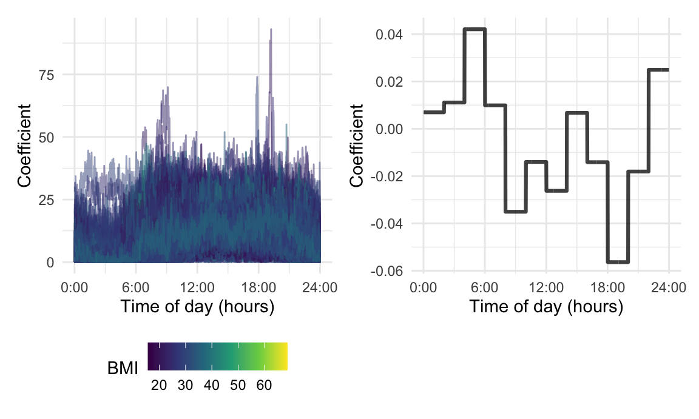
Probably most important overall approach; very flexible, and with many model extensions. Start with a single functional coefficient to get things going.
Would then introduce functional form of a “simple” SoFR, including intercept and integral term only. Discuss interpretation of the functional coefficient, drawing on EDA for intuition.
Note that interpretation in more complex settings is similar – would need to “hold scalar covariates” constant or think in terms of log ORs (for logit regression), but key ideas hold.
Key challenge in this model is choosing a form for coefficient function and developing an estimation approach.
Clearly the novelty in the SoFR, compared to nonfunctional models, is the coefficient function that integrates with observed functions to produce scalar terms in the linear predictor.
Can start with a parametric basis expansion – linear or quadratic – to walk through the conversion of model to estimating a small number of parameters. This will include the integration of each basis function and functional predictor (and numeric approximations of that integration), which creates a known design matrix.
OPTION: Is it worthwhile to do this estimation using lm() with a fixed basis expansion? That would emphasize this is “just” regression after recasting the model.
This has some limitations, though, and is not so flexible
Code for creating basis.
epoch_arg = seq(1/60, 24, length = 1440)
B = cbind(1, epoch_arg, epoch_arg^2)
colnames(B) = c("int", "lin", "quad")
num_int_df =
as_tibble(
(nhanes_df$MIMS_mat %*% B) * (1/ 60),
rownames = "SEQN") %>%
mutate(SEQN = as.numeric(SEQN))Code for fitting model.
nhanes_quad_df =
left_join(nhanes_df, num_int_df, by = "SEQN") %>%
select(BMI, int, lin, quad)
fit_quad =
nhanes_quad_df %>%
lm(BMI ~ 1 + int + lin + quad, data = .)
quad_coef_df =
tibble(
method = "Quadratic",
estimate = tfd(t(B %*% coef(fit_quad)[-1]), arg = epoch_arg))Not shown: code for doing integration via tf_integrate
and confirming this is similar.
Slight change in code, using BS with 8 DoF
B_bspline = splines::bs(epoch_arg, df = 8, intercept = TRUE)
colnames(B_bspline) = str_c("BS_", 1:8)
num_int_df =
as_tibble(
(nhanes_df$MIMS_mat %*% B_bspline) * (1/ 60),
rownames = "SEQN") %>%
mutate(SEQN = as.numeric(SEQN))
nhanes_bspline_df =
left_join(nhanes_df, num_int_df, by = "SEQN") %>%
select(BMI, BS_1:BS_8)
fit_bspline =
lm(BMI ~ 1 + ., data = nhanes_bspline_df)
bspline_coef_df =
tibble(
method = "B-Spline",
estimate =
tfd(t(B_bspline %*% coef(fit_bspline)[-1]), arg = epoch_arg))bind_rows(stepfun_coef_df, quad_coef_df, bspline_coef_df) %>%
ggplot(aes(y = estimate, color = method)) +
geom_spaghetti(alpha = 1, linewidth = 1.2) 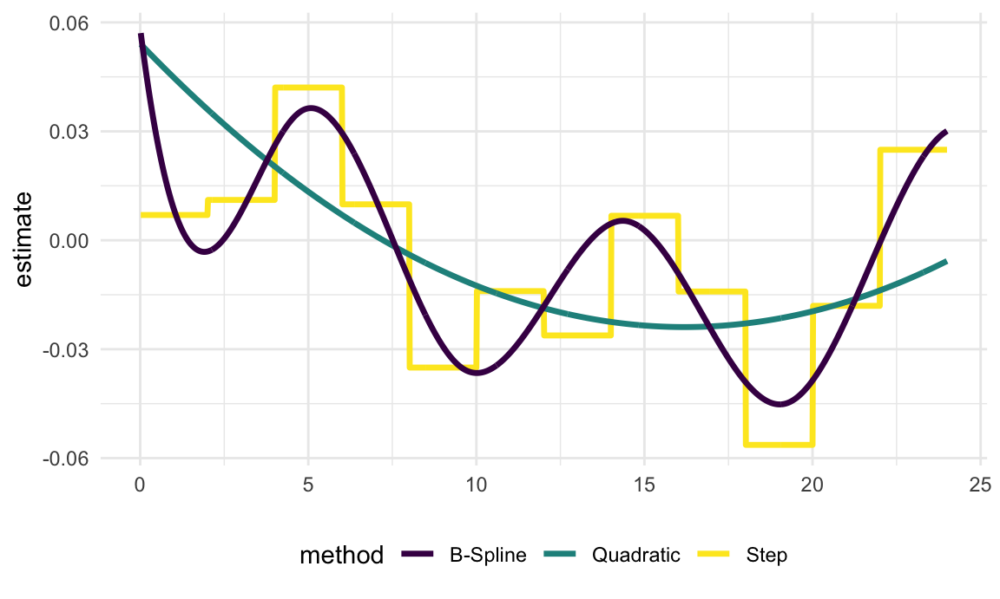
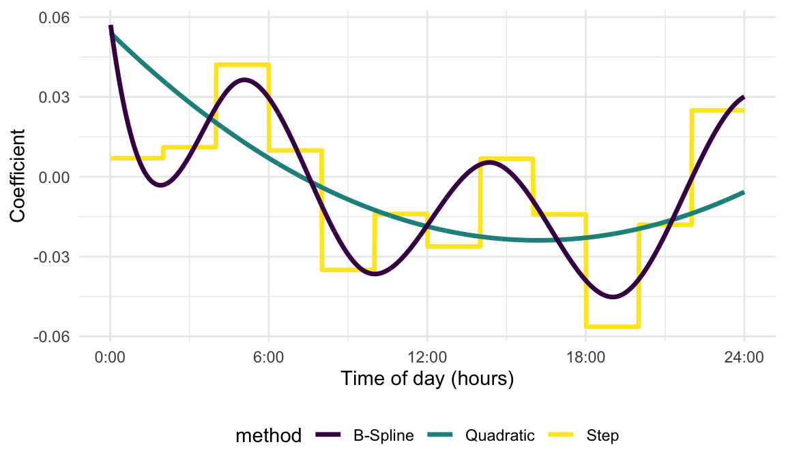
Broadly, we favor expanding in terms of a known basis and explicitly controlling smoothness using penalties, although other approaches are available. Simply using a low dimension spline basis works the same way as the parametric approach, but need to increase degrees of freedom and shift to penalized regression.
Recalling some preliminary information on smoothing, our goal is to estimate coefficient function in a way that explicitly penalizes wiggliness; we’ve seen how to do this in scatterplot smoothing, but the idea translates to this setting. In particular, we want to estimate coefficient function subject to a smoothness penalty controlled by a single tuning parameter.
Can write the resulting penalized likelihood for “simple” SoFR; note tuning parameter could be chosen in a variety of ways. But a central insight is the connection to semiparametric regression, which takes advantage of a mixed model formulation to obtain an equivalent ridge regression and estimate tuning parameters in terms of variance components.
NOTE: this is a point Ciprian’s comments emphasize, and we should trace idea of casting penalized spline SoFR as a mixed model (in refund or mgcv) back to the pfr paper.
B_bspline = splines::bs(epoch_arg, df = 30, intercept = TRUE)
sec_deriv = splines2::bSpline(epoch_arg, df = 30, intercept = TRUE, derivs = 2)
P = t(sec_deriv) %*% sec_deriv * (1 / 60)
X = cbind(1, (nhanes_df$MIMS_mat %*% B_bspline) * (1 / 60))
D = rbind(0, cbind(0, P))
y = nhanes_df$BMI
lambda_high = 10e6
lambda_low = 100
coef_high = solve(t(X) %*% X + lambda_high * D) %*% t(X) %*% y
coef_low = solve(t(X) %*% X + lambda_low * D) %*% t(X) %*% y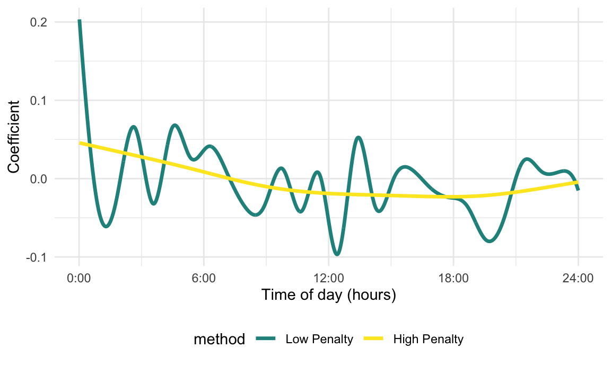
C = (nhanes_df$MIMS_mat %*% B_bspline) * (1 / 60)
fit_REML_penalty =
gam(y ~ 1 + C, paraPen = list(C = list(P)),
method = "REML")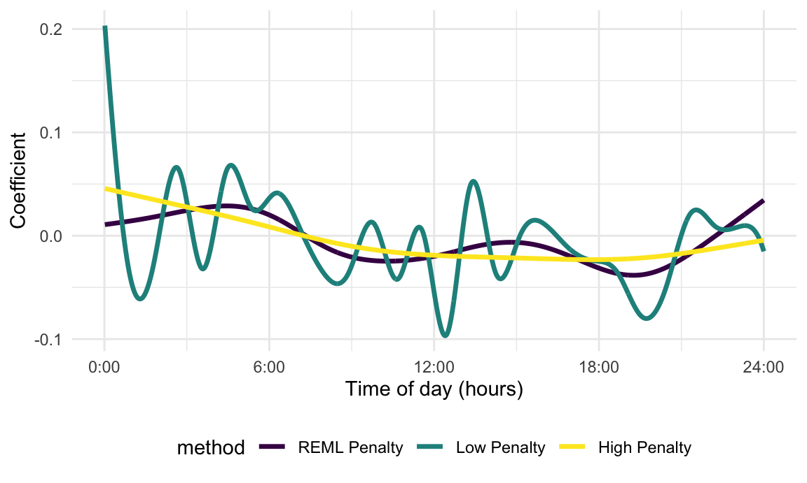
pfr_fit =
pfr(
BMI ~ lf(MIMS_mat, argvals = seq(1/60, 24, length = 1440)),
method = "REML", data = nhanes_df)
pfr_coef_df =
coef(pfr_fit) %>%
mutate(method = "refund::pfr()") %>%
tf_nest(.id = method, .arg = MIMS_mat.argvals) %>%
rename(estimate = value)## Warning in vec_ptype2_tfd_tfd(x, y, ...): concatenating functions on different
## grids.
## Warning in vec_ptype2_tfd_tfd(x, y, ...): inputs have different resolutions,
## result has resolution =0.001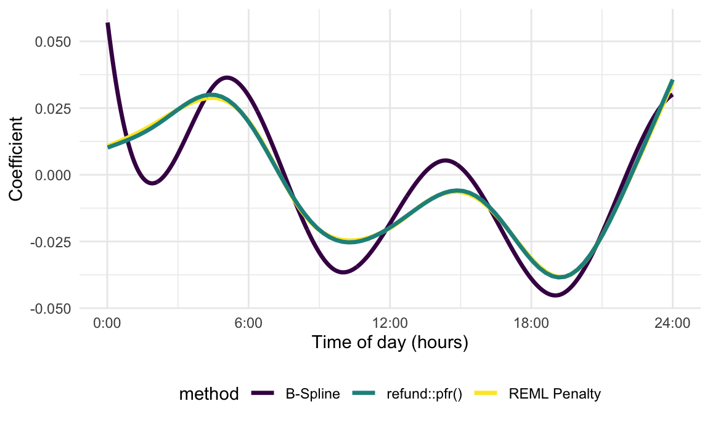
Quick table showing Adjusted R2 for each of these models
adj_r2_table =
tibble(
method = c("bin", "quad", "bspline8"),
model = list(fit_binned, fit_quad, fit_bspline)
) %>%
mutate(
glance = map(model, broom::glance),
adjr2 = map_dbl(glance, "adj.r.squared")
) %>%
select(method, adjr2)If your basis is data-driven, the integrals in the expansion aren’t approximated using numeric integration; they’re the scores from the FPCA expansion. Therefore you’re effectively regressing on FPC scores. This can be good if it’s hard to do that integration – if curves are sparse or very noisy, for example.
nhanes_fpca =
rfr_fpca("MIMS_tf", data = nhanes_df, npc = 4)
## Warning in new_tfb_fpc(data, domain = domain, method = method, resolution = resolution, : domain for tfb_fpc can't be larger than observed arg-range -- extrapolating FPCs is a bad idea.
## domain reset to [0.017,24]
B_fpca = nhanes_fpca$efunctions * sqrt(60)
colnames(B_fpca) = str_c("efunc_", 1:4)
num_int_df =
as_tibble(
(nhanes_df$MIMS_mat %*% B_fpca) * (1/60),
rownames = "SEQN") %>%
mutate(SEQN = as.numeric(SEQN))
nhanes_fpcr_df =
left_join(nhanes_df, num_int_df, by = "SEQN") %>%
select(BMI, efunc_1:efunc_4)
fit_fpcr_int =
lm(BMI ~ 1 + ., data = nhanes_fpcr_df)Different way of doing the same thing.
C = nhanes_fpca$scores * (sqrt(60) / 60)
colnames(C) = str_c("score_", 1:4)
rownames(C) = nhanes_df$SEQN
nhanes_score_df =
as_tibble(
C, rownames = "SEQN") %>%
mutate(SEQN = as.numeric(SEQN))
nhanes_fpcr_df =
left_join(nhanes_df, nhanes_score_df, by = "SEQN") %>%
select(BMI, score_1:score_5)
fit_fpcr_score =
lm(BMI ~ 1 + ., data = nhanes_fpcr_df)## Warning: There were 2 warnings in `mutate()`.
## The first warning was:
## ℹ In argument: `fit = map(npc, nhanes_fpcr, df = nhanes_df)`.
## Caused by warning in `new_tfb_fpc()`:
## ! domain for tfb_fpc can't be larger than observed arg-range -- extrapolating FPCs is a bad idea.
## domain reset to [0.017,24]
## ℹ Run `dplyr::last_dplyr_warnings()` to see the 1 remaining warning.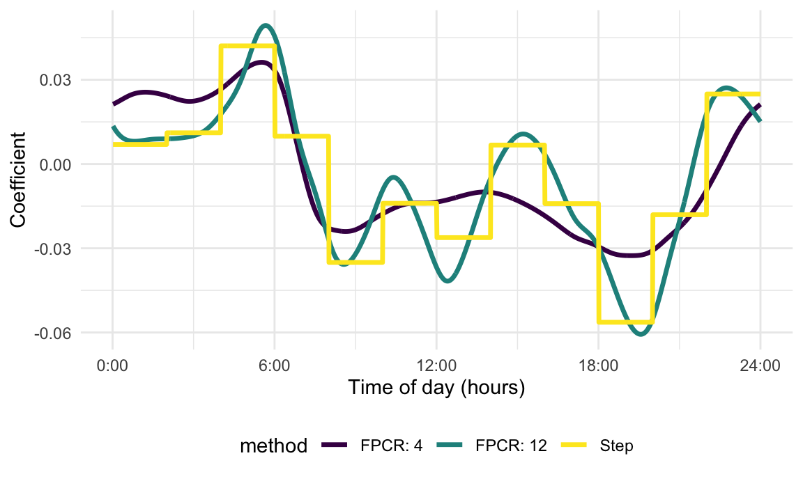
Regressing only on scores doesn’t explicitly penalize for smoothness. You can choose the number of components, or maybe start with many and do a variable selection, but both of those have issues. Or you can do a penalized approach, where now you’re doing numeric second derivatives and integration to get the penalty matrix.
fit_fpcr_int %>%
broom::tidy()
## # A tibble: 5 × 5
## term estimate std.error statistic p.value
## <chr> <dbl> <dbl> <dbl> <dbl>
## 1 (Intercept) 32.4 0.275 118. 0
## 2 efunc_1 0.0668 0.00509 13.1 6.88e-39
## 3 efunc_2 -0.00835 0.00759 -1.10 2.72e- 1
## 4 efunc_3 0.0524 0.0115 4.56 5.16e- 6
## 5 efunc_4 0.0677 0.0147 4.60 4.33e- 6Construction of (pointwise) confidence intervals.
Need covariance thing.
Here’s FPCR with 5 basis functions.
var_basis_coef = vcov(fit_fpcr_int)[-1,-1]
var_coef_func = B_fpca %*% var_basis_coef %*% t(B_fpca)
fpcr_inf_df =
tibble(
method = c("FPCR: 5"),
estimate = tfd(t(B_fpca %*% coef(fit_fpcr_int)[-1]), arg = epoch_arg),
se = tfd(sqrt(diag(var_coef_func)), arg = epoch_arg)
) %>%
mutate(
ub = estimate + 1.96 * se,
lb = estimate - 1.96 * se) PFR inference comes from pfr; that’s in the coef above.
pfr_inf_df =
pfr_coef_df %>%
mutate(
ub = estimate + 1.96 * se,
lb = estimate - 1.96 * se) bind_rows(pfr_inf_df, fpcr_inf_df) %>%
ggplot(aes(y = estimate)) +
geom_spaghetti() +
geom_errorband(aes(ymax = ub, ymin = lb)) +
facet_grid(.~method)
## Warning in vec_ptype2_tfd_tfd(x, y, ...): concatenating functions on different
## grids.
## Warning in vec_ptype2_tfd_tfd(x, y, ...): inputs have different resolutions,
## result has resolution =0.01
## Warning in vec_ptype2_tfd_tfd(x, y, ...): concatenating functions on different
## grids.
## Warning in vec_ptype2_tfd_tfd(x, y, ...): inputs have different resolutions,
## result has resolution =0.01
## Warning in vec_ptype2_tfd_tfd(x, y, ...): concatenating functions on different
## grids.
## Warning in vec_ptype2_tfd_tfd(x, y, ...): inputs have different resolutions,
## result has resolution =0.01
## Warning in vec_ptype2_tfd_tfd(x, y, ...): concatenating functions on different
## grids.
## Warning in vec_ptype2_tfd_tfd(x, y, ...): inputs have different resolutions,
## result has resolution =0.01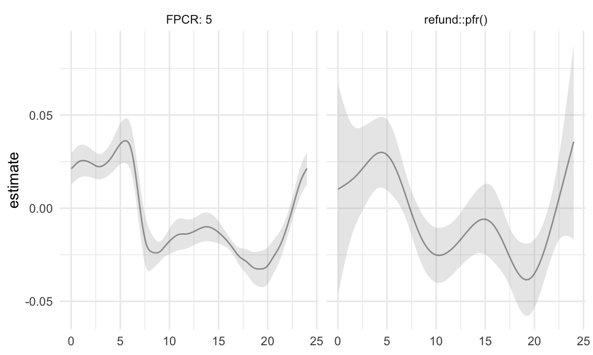
## Warning: There were 3 warnings in `mutate()`.
## The first warning was:
## ℹ In argument: `fit = map(npc, nhanes_fpcr, df = nhanes_df)`.
## Caused by warning in `new_tfb_fpc()`:
## ! domain for tfb_fpc can't be larger than observed arg-range -- extrapolating FPCs is a bad idea.
## domain reset to [0.017,24]
## ℹ Run `dplyr::last_dplyr_warnings()` to see the 2 remaining warnings.
## Warning in vec_ptype2_tfd_tfd(x, y, ...): concatenating functions on different
## grids.
## Warning in vec_ptype2_tfd_tfd(x, y, ...): inputs have different resolutions,
## result has resolution =0.01
## Warning in vec_ptype2_tfd_tfd(x, y, ...): concatenating functions on different
## grids.
## Warning in vec_ptype2_tfd_tfd(x, y, ...): inputs have different resolutions,
## result has resolution =0.01
## Warning in vec_ptype2_tfd_tfd(x, y, ...): concatenating functions on different
## grids.
## Warning in vec_ptype2_tfd_tfd(x, y, ...): inputs have different resolutions,
## result has resolution =0.01
## Warning in vec_ptype2_tfd_tfd(x, y, ...): concatenating functions on different
## grids.
## Warning in vec_ptype2_tfd_tfd(x, y, ...): inputs have different resolutions,
## result has resolution =0.01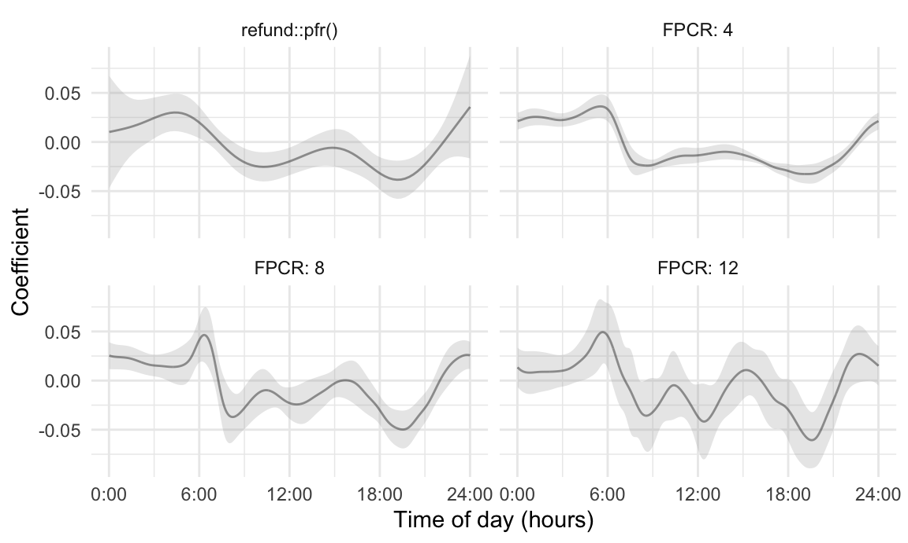
We may want to do a little on identifiability. removing the mean from Xi(t) and maybe some of the work that Fabian and Sonja did (essentially showing that only particular types of beta coefficients are estimable).
I lean towards dedicating a section to this, rather than folding it in elsewhere. But it might be a short section …
Introduce CONTENT data, and explain that SoFR can easily become a dynamic prediction problem.
My understanding of the approach is: FPCA to expand predictors, still splines for coefficient, numeric integration and penalized estimation.
May need to revisit identifiability?
Many subsections extend
Just popping stuff in a non-penalized design matrix.
Show some results, interpret coefficients, done.
pfr_adj_fit =
pfr(
BMI ~ age + gender + lf(MIMS_mat, argvals = seq(1/60, 24, length = 1440)),
data = nhanes_df)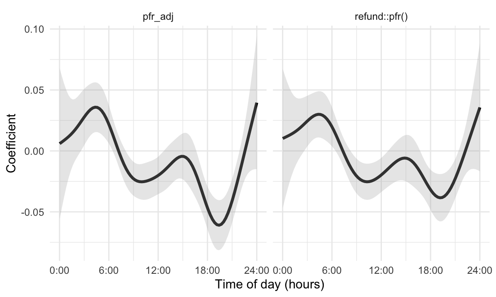
##
## Family: gaussian
## Link function: identity
##
## Formula:
## BMI ~ age + gender + s(x = MIMS_mat.tmat, by = L.MIMS_mat)
##
## Parametric coefficients:
## Estimate Std. Error t value Pr(>|t|)
## (Intercept) 34.766073 0.496659 70.000 < 2e-16 ***
## age -0.039074 0.005599 -6.979 3.22e-12 ***
## genderFemale 1.683539 0.161064 10.453 < 2e-16 ***
## ---
## Signif. codes: 0 '***' 0.001 '**' 0.01 '*' 0.05 '.' 0.1 ' ' 1
##
## Approximate significance of smooth terms:
## edf Ref.df F p-value
## s(MIMS_mat.tmat):L.MIMS_mat 7.21 8.208 38.1 <2e-16 ***
## ---
## Signif. codes: 0 '***' 0.001 '**' 0.01 '*' 0.05 '.' 0.1 ' ' 1
##
## R-sq.(adj) = 0.0459 Deviance explained = 4.7%
## -REML = 25271 Scale est. = 46.861 n = 7553Could do some additional work to get mediation …
pfr_mult_fit =
pfr(
BMI ~ age + gender +
lf(MIMS_mat, argvals = seq(1/60, 24, length = 1440)) +
lf(MIMS_sd_mat, argvals = seq(1/60, 24, length = 1440)),
data = nhanes_df)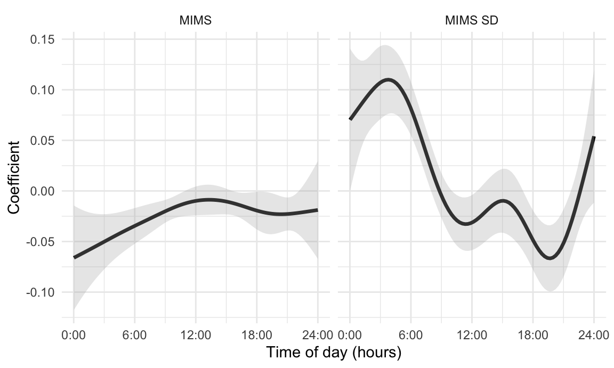
##
## Family: gaussian
## Link function: identity
##
## Formula:
## BMI ~ age + gender + s(x = MIMS_mat.tmat, by = L.MIMS_mat) +
## s(x = MIMS_sd_mat.tmat, by = L.MIMS_sd_mat)
##
## Parametric coefficients:
## Estimate Std. Error t value Pr(>|t|)
## (Intercept) 36.253053 0.647002 56.032 < 2e-16 ***
## age -0.048196 0.005893 -8.178 3.35e-16 ***
## genderFemale 1.709442 0.160691 10.638 < 2e-16 ***
## ---
## Signif. codes: 0 '***' 0.001 '**' 0.01 '*' 0.05 '.' 0.1 ' ' 1
##
## Approximate significance of smooth terms:
## edf Ref.df F p-value
## s(MIMS_mat.tmat):L.MIMS_mat 3.802 4.399 18.63 <2e-16 ***
## s(MIMS_sd_mat.tmat):L.MIMS_sd_mat 7.114 8.145 13.07 <2e-16 ***
## ---
## Signif. codes: 0 '***' 0.001 '**' 0.01 '*' 0.05 '.' 0.1 ' ' 1
##
## R-sq.(adj) = 0.0564 Deviance explained = 5.81%
## -REML = 25238 Scale est. = 46.342 n = 7553fit the model:
pfr_mort_fit =
pfr(
death_2yr ~ age + gender + BMI +
lf(MIMS_mat, argvals = seq(1/60, 24, length = 1440)),
family = binomial(), method = "REML", data = nhanes_df)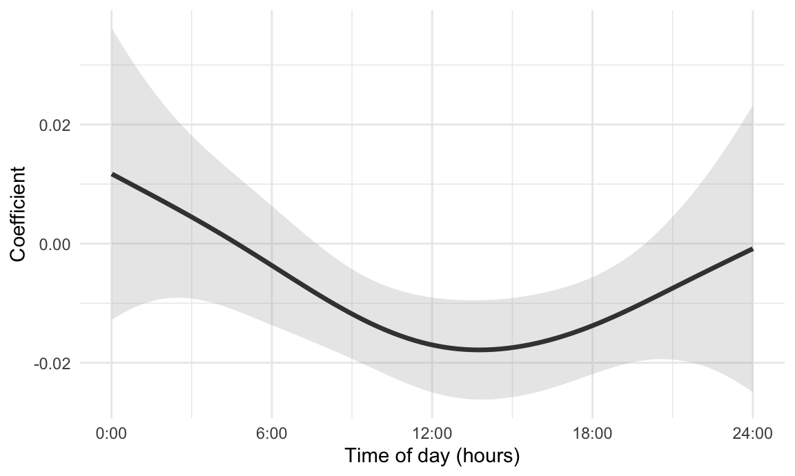
Not sure how far we go in this direction – there are tons of models, and interpreting the results can be hard. Maybe this is where we show some options in pfr() and then do a lit review?
I’m calling this an extension of linear SoFR, but I guess could go in other models.